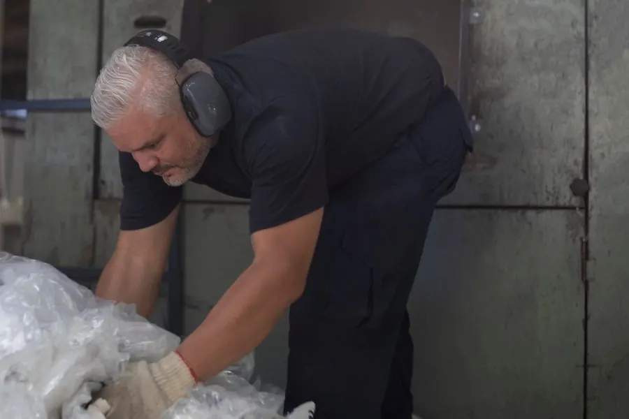
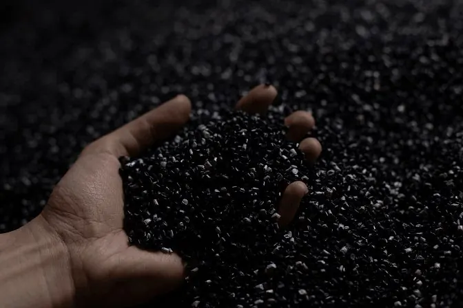
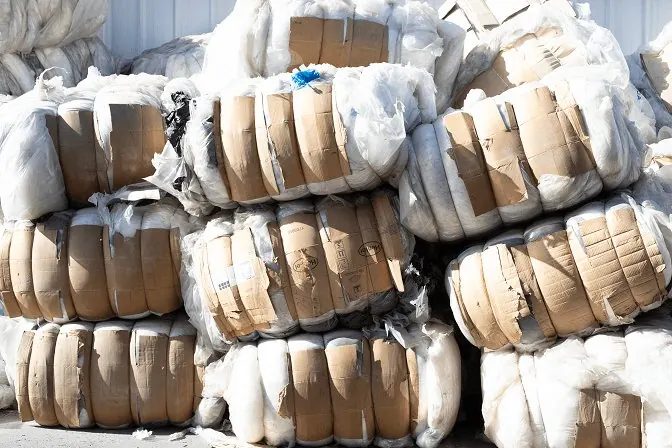
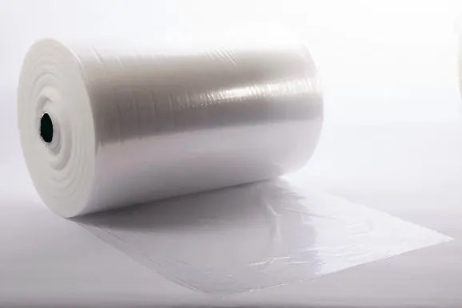
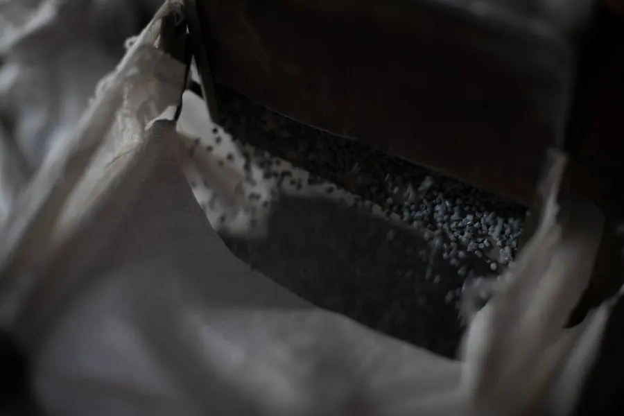
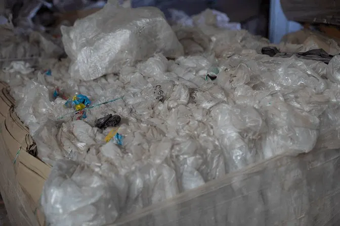
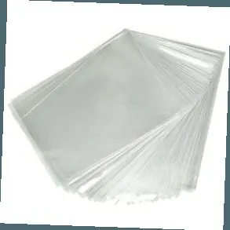
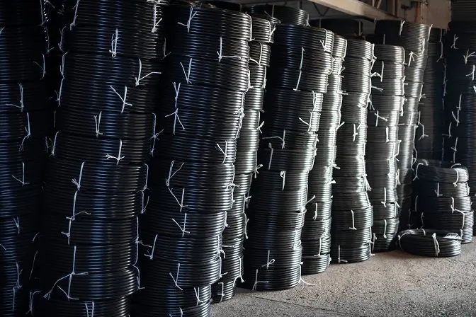

Reciclaje
Productos reciclados
Desde 1984 reciclamos diferentes tipos de polímeros. Hoy fabricamos una gran variedad de productos reciclados para distintos mercados.
Planta San Bernardo: +56 9 8953 0167 · 2 2554 7602 · Lunes a viernes, 09:00 a 18:00 hrs
Reciclaje
¿Qué reciclamos?
Recuperamos polietileno y lo volvemos a convertir en productos útiles. Con el material reciclado fabricamos:
- Cañerías de polietileno
- Bolsas de basura
- Mangas de polietileno

Líneas
Material reciclado disponible
Consulta disponibilidad y precio de cada material por WhatsApp o con el formulario.

Utilización: cañerías de agua, bolsas de basura y mangas.

Utilización: bolsas y mangas.

Utilización: bolsas y mangas.

Utilización: cañerías de agua.

Utilización: cañerías de agua, bolsas de basura y mangas.

Uso: se vende como materia prima.

Utilización: cañerías de agua.
Compramos sus plásticos
Compramos sus plásticos aquí
- 1Cuéntanos qué plástico tienes: tipo, volumen aproximado y ubicación.
- 2Envíalo con el formulario, por WhatsApp o llámanos.
- 3Te contactamos en horario hábil para evaluarlo.
Camino Los Pinos 03496, San Bernardo.
Lunes a viernes 09:00 a 18:00 hrs.